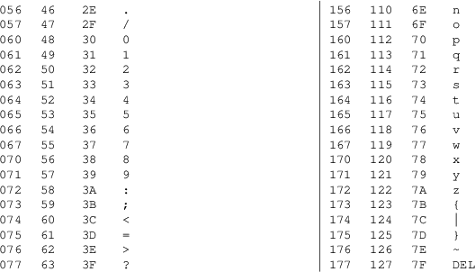

ascii − ASCII character set encoded in octal, decimal, and hexadecimal
ASCII is the American Standard Code for Information Interchange. It is a 7-bit code. Many 8-bit codes (e.g., ISO 8859-1) contain ASCII as their lower half. The international counterpart of ASCII is known as ISO 646-IRV.
The following table contains the 128 ASCII characters.
C program '\X' escapes are noted.

Tables
For convenience, below are more compact tables in hex and
decimal.
2 3 4 5 6 7 30
40 50 60 70 80 90 100 110 120
------------- ---------------------------------
0: 0 @ P ` p 0: ( 2 < F P Z d n x
1: ! 1 A Q a q 1: ) 3 = G Q [ e o y
2: " 2 B R b r 2: * 4 > H R \ f p z
3: # 3 C S c s 3: ! + 5 ? I S ] g q {
4: $ 4 D T d t 4: " , 6 @ J T ^ h r |
5: % 5 E U e u 5: # − 7 A K U _ i s }
6: & 6 F V f v 6: $ . 8 B L V ` j t ~
7: ' 7 G W g w 7: % / 9 C M W a k u DEL
8: ( 8 H X h x 8: & 0 : D N X b l v
9: ) 9 I Y i y 9: ' 1 ; E O Y c m w
A: * : J Z j z
B: + ; K [ k {
C: , < L \ l |
D: − = M ] m }
E: . > N ^ n ~
F: / ? O _ o DEL
History
/etc/ascii (VII) appears in the UNIX Programmer’s
Manual.
On older terminals, the underscore code is displayed as a left arrow, called backarrow, the caret is displayed as an up-arrow and the vertical bar has a hole in the middle.
Uppercase and lowercase characters differ by just one bit and the ASCII character 2 differs from the double quote by just one bit, too. That made it much easier to encode characters mechanically or with a non-microcontroller-based electronic keyboard and that pairing was found on old teletypes.
The ASCII standard was published by the United States of America Standards Institute (USASI) in 1968.
charsets(7), iso_8859−1(7), iso_8859−2(7), iso_8859−3(7), iso_8859−4(7), iso_8859−5(7), iso_8859−6(7), iso_8859−7(7), iso_8859−8(7), iso_8859−9(7), iso_8859−10(7), iso_8859−11(7), iso_8859−13(7), iso_8859−14(7), iso_8859−15(7), iso_8859−16(7), utf−8(7)